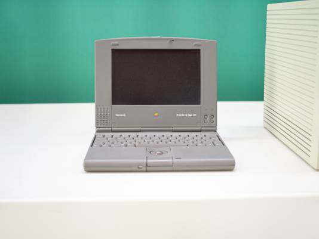
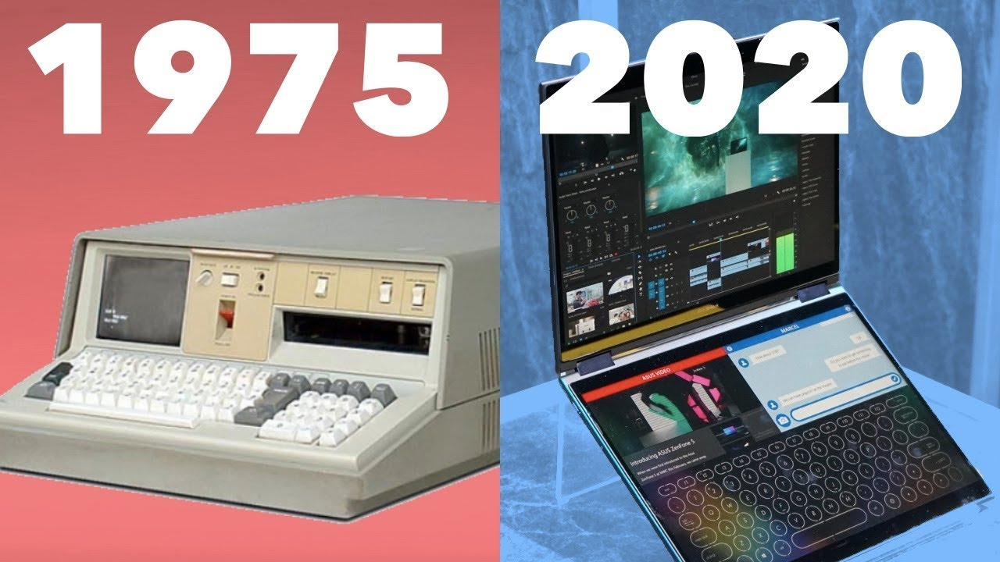

In 1991, Apple released the first three PowerBooks: the high-end PowerBook 100, the more powerful PowerBook 140, and the high- end PowerBook 170, the only one with an active matrix display.
These laptops caused a stir in the tech industry due to their compact dark grey cases, built-in trackball, and the innovative positioning of the keyboard which left room for palm-rests. These were features that hadn’t been seen in previous laptops. The user-friendly layout of these PowerBooks helped to set out the future for Apple laptop computers. Basically, the PowerBook’s series became the standard layout all future notebook PCs would eventually follow.
These PowerBooks from Apple were met with positive reviews , the first series taking 40% of all laptop sales upon release. Despite their popularity, Apple laptops struggled with overheating problems.
Visit the Apple UK website.The story begins in the 1970s, when Microsoft introduced MS-DOS, the first operating system that laid the foundation for the future development of personal computing. However, it wasn’t until his 1985 that Microsoft released Windows 1.0, marking the beginning of a new era in computing. Windows 1.0 provided a graphical user interface (GUI) that revolutionized the way users interacted with their computers, setting the stage for the integration of Windows into laptops.
Throughout the 1990s, Windows continued to evolve with the release of Windows 3.0, Windows 95, and subsequent versions, each bringing significant improvements in user experience and functionality. These advancements paved the way for the widespread adoption of Windows-based laptops, which became increasingly powerful and versatile.
The turn of the millennium saw the emergence of Windows XP, a landmark release that solidified Microsoft’s dominance in the operating system market. With the growing popularity of laptops, Windows XP became the preferred operating system for portable computing devices, driving further innovation in hardware and software integration.
As technology progressed, so did the capabilities of Windows laptops. The release of Windows Vista in 2006 introduced a revamped user interface and improved security features, although it faced criticism for its performance issues.
Visit the Microsoft UK website.